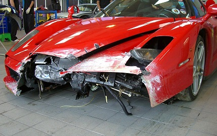

Everyone Likes Expensive Cars...
What's not to like? Take the Audi R8 below for example. It is super fast, it has oodles of horsepoweer, and it is all-wheel drive so you are constantly getting power to the wheels that need it. THIS is the ultimate driving machine.

... Until they Don't.
Super cars are often super expensive cars. Take the basic front end repair for the Ferrari Enzo below. If this were a Toyota Camry, this repair would cost you approximately $6,000 and would result in a reduction of $1,500 in the cars value after being repaired. The Enzo on the other hand will cost you $80,000 to fix and aftwards the car will be worth $65,000 less with a "salvage" title.
